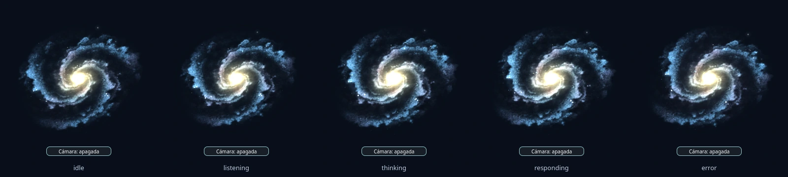
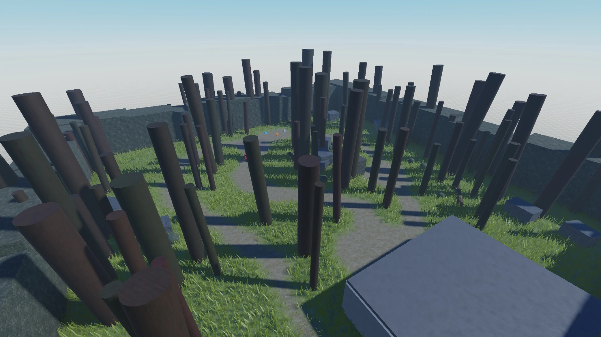
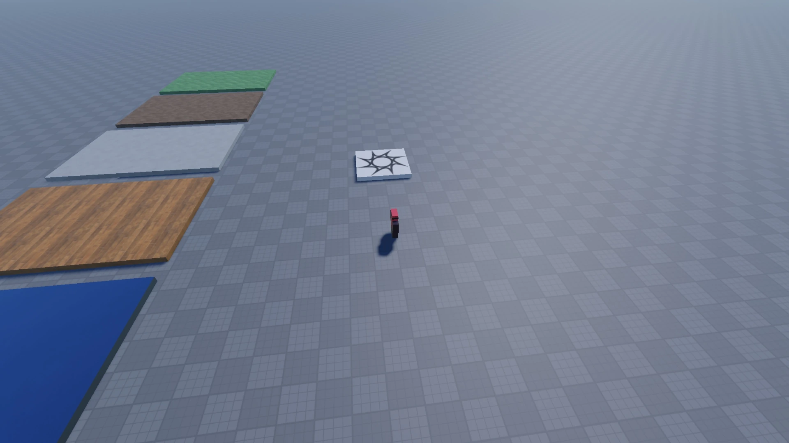
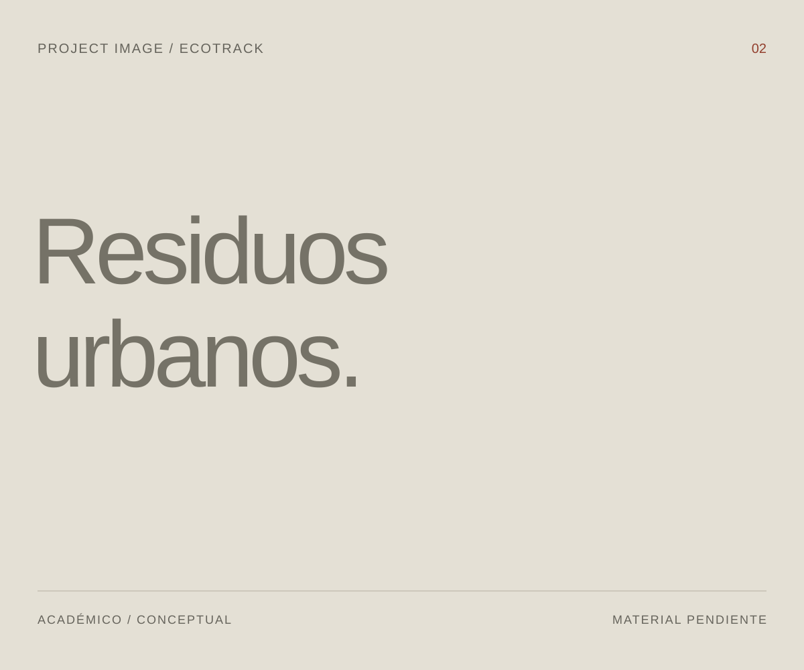
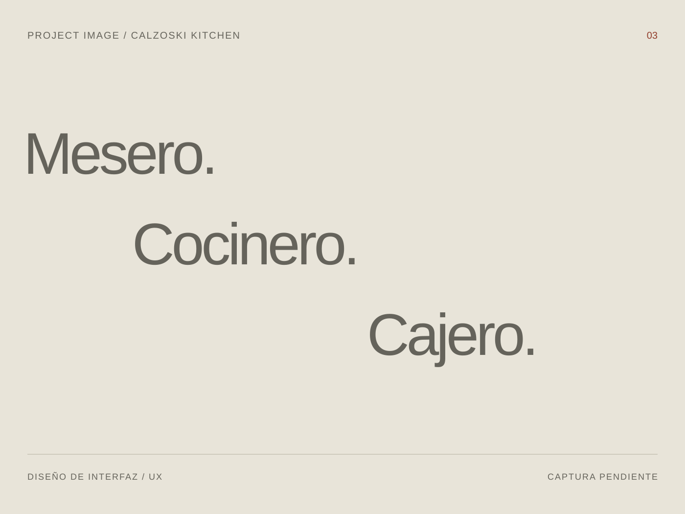

KING
Un asistente local para automatizar y controlar funciones del sistema en Linux.
Proyecto personal de Jaasiel Delgado Reyes.

- Python
- Ollama
- Playwright
- Linux
- Git
Ingeniería de Software
Estudiante interesado en desarrollo de software, automatización, sistemas y nuevas tecnologías.
Dos proyectos personales en desarrollo.
Dos trabajos del contexto universitario.
Un asistente local para automatizar y controlar funciones del sistema en Linux.
Proyecto personal de Jaasiel Delgado Reyes.

Entorno, ambientación,
interacción y experiencia.
Mi proyecto de videojuego en Roblox. Estas vistas documentan etapas de desarrollo del entorno y escenas de pruebas.


Desliza para recorrer las vistas. Abre una imagen para verla completa.
Gestión inteligente de residuos urbanos.
Un sistema académico y conceptual. Su presentación corresponde a esa etapa, sin atribuirle un producto comercial terminado.

Un restaurante, tres tipos de usuario.
Prototipo de interfaces para mesero, cocinero y cajero. El trabajo se centra en UX, prototipado y diseño de interfaz.

Estudio Ingeniería de Software en la Universidad Veracruzana.
Mis intereses están en el desarrollo de software, la automatización, los sistemas y las nuevas tecnologías. Este archivo reúne mi trabajo personal y académico: KING, Blind Echoes, EcoTrack y Calzoski Kitchen.
Índice de estudio y herramientas.
Sin porcentajes ni niveles de dominio.
Formación, habilidades y proyectos.
Descargar curriculumFormulario de demostración.
Valida tus datos sin enviarlos.
No hay backend. Los datos permanecen en los campos de esta página; no se envían ni se almacenan.